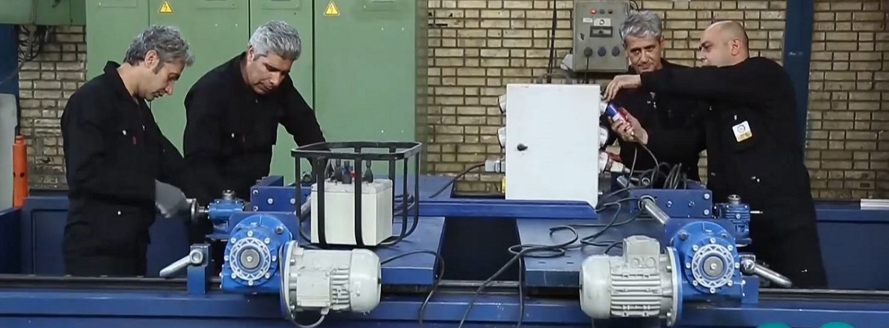

تاریخچه ماشینکاری در محل
ماشینکاری در محل ، اوایل در صنعت کشتی سازی و پل سازی مرسوم بوده است که برای انتقال سوراخ ها جهت پرچ کردن قطعات به هم رایج بود .اولین مورد ماشینکاری در محل که شکل تخصصی تری به خود گرفته بود و سندی برای آن یافت شد که حدود 110 سال پیش درصنعت کشتی سازی بود

در سالهای اولیه ماشینکاری در محل به صورت امروزی یک رشته تخصصی نبوده و اکثرا توسط متخصصین شرکت ها با امکانات و اطلاعات محدود انجام می شد ورفته رفته با گذشت زمان ، پیشرفت تکنولوژی و نیاز کارخانجات به این مهم شرکت های تخصصی ماشینکاری در محل شکل گرفتند.

ماشینکاری در محل ، اوایل در صنعت کشتی سازی و پل سازی مرساولین استفاده تخصصی از ماشینکاری در محل ، در صنعت کشتی سازی در ایالات متحده آمریکا بود. این ماشین در سال 1907 ساخته شد که قابلیت ماشینکاری بین قطرهای 22 تا 30 فوت را داشت.

درحال حاضر بیش از 100 کشور از خدمات ماشینکاری در محل به طور مستمر استفاده میکنند و حدود 30 شرکت فعال در این حوزه شناسایی شده است.
شرکت ماشین ابزار مکث فعالیت خود را در حوزه ماشینکاری در محل از سال 1382 شروع کرد و در طی این مدت از نظر ماشین آلات تخصصی ، آموزش پرسنل فنی ، دامنه فعالیت و … خود رادر رده 15 شرکت برتر جهانی در این زمینه قرار داده است.